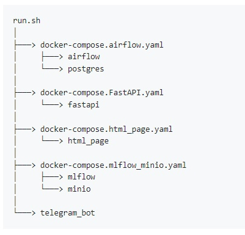

Main
Main
 Documentation
Documentation
 Form
Form
Main
This is the content for the main section.This is the content for the main section.This is the content for the main section.This is the content for the main section.
Documentation
Project details description

Airflow
localhost:8080
Airflow in our project automates different parts of the project with the following key components:
DAGs:
- tg_data_dag Retrieves the last n posts from specified Telegram channels daily.
- mlflow_tests_dag: Manages machine learning model testing. Includes tasks for setting up MLflow, loading datasets, training models, and checking model performance.
Postgres
localhost:15432
In this project, PostgreSQL is the core database system, used for efficient data storage and retrieval. The application connects to PostgreSQL using psycopg2, enabling operations with posts like data insertion, retrieval, update, and deletion. The database schema, defined within the application, supports the project's data model, ensuring the database structure aligns with the project's needs.
Fastapi
localhost:8000
FastAPI application provides a REST API for the project, handling GET and POST requests.
Features:
GET Request Retrieves data from the root URL.
POST Request: Accepts user input to submit data to the /user endpoint.
Html page
localhost:8888
The HTML page of the project is an interactive interface that provides basic information about the project and the technologies used in it.
Supported sections:
🏠 Main: Main page of the project.
📚 Documentation: Documentation of the project.
🛠️ Airflow: Information about Airflow.
🤖 MLflow: Information about MLflow.
Mlflow
localhost:5000
MLflow in our project is used for managing the machine learning lifecycle, including model training, prediction, and performance evaluation.
Stages:
- Setup: Configuring MLflow with a tracking URI and MinIO storage details.
- Model training and prediction: Training models with provided functions and datasets, logging results to MLflow.
- Model loading and checking: Retrieving logged model information and assessing performance on test data.
- Model testing: Deciding which models to test based on predefined settings, using Airflow to orchestrate the process.
Minio
localhost:9001
In our project, MinIO is utilized as a storage solution for machine learning artifacts and models, working in conjunction with MLflow. It's configured with specific access and secret keys for secure data management.
Telegram bot
@tg_post_analysis_bot
Telegram bot is designed to provide users with information about different sections of the project.
Main functions:
- User greeting
- Section selection (look html page)
- Extracting the contents of a section
How to launch the project
Step 1: Open the terminal.
Step 2: Update your system.
bash
sudo apt-get update
Step 3: Install Docker using following instructions.
Step 4: Enter the following code into the terminal to run the project.
bash
./run.sh
Step 5: Enter the following code into the terminal to stop the project.
bash
./stop.sh
Obtaining the necessary data to work with Telegram API
Step 1: Go to the Telegram developer tools section by clicking here.
Step 2: Log in and click on the API Development Tools section.
Step 3: A form will open in which you need to fill in the empty fields (only "App title" and "Short name" are important to fill).
Step 4: After clicking Create application, a page will be displayed showing various data. You need to copy the api_id and api_hash parameters to a safe place, they will be needed for Telegram API.
Working with the script
Step 1: Enter the obtained api_id and api_hash from the previous step in the tg_info.txt file in the appropriate places.
Step 2: Run the script, which will automatically connect to your account and give you access to the basic functionality of the script.
Step 3: Enter the id of the Telegram channel you are interested in and the number of recent posts for which you want to see information.
Step 4: Authenticate to your Telegram account via the console.
Step 5: Profit!
Databases
❗A description of each database can be found inside the archive
Small database without media:
Large database + data with media:
MLFlow
Follow this link to open MLFlow.